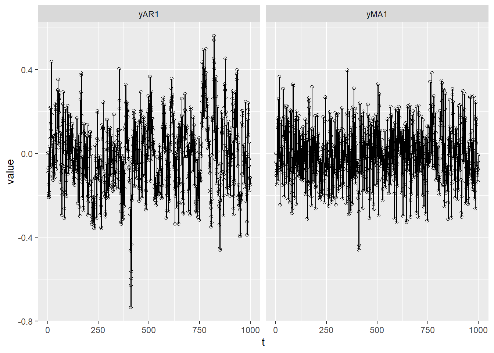
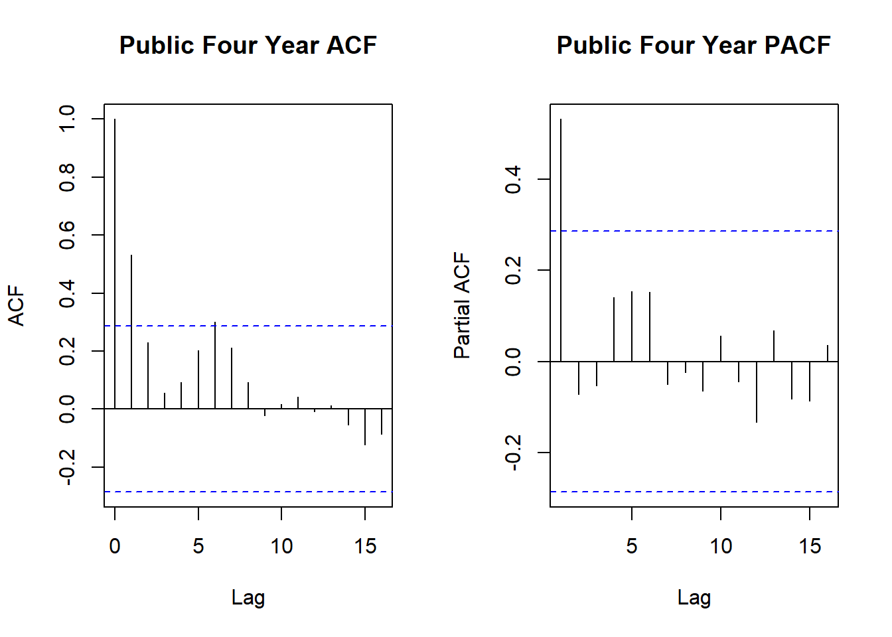
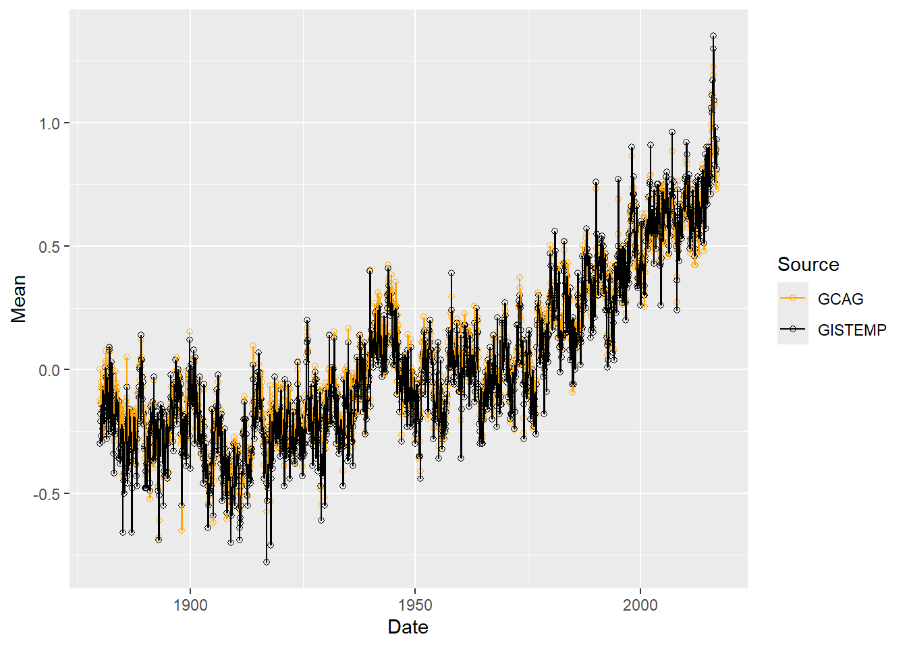
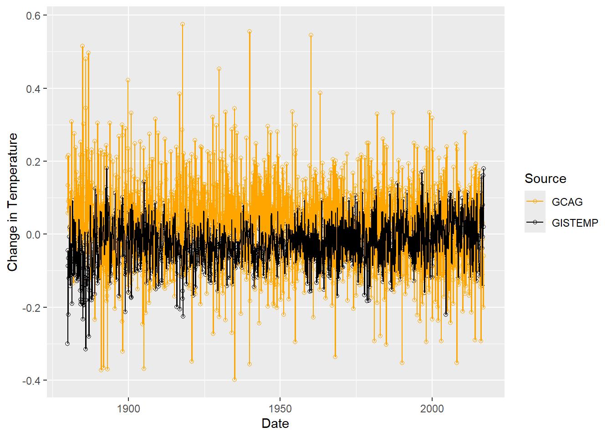
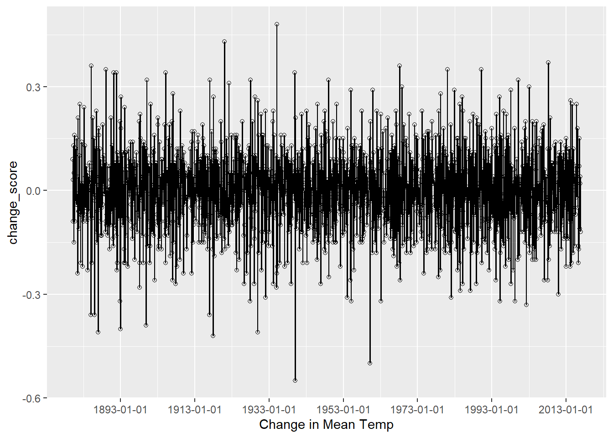
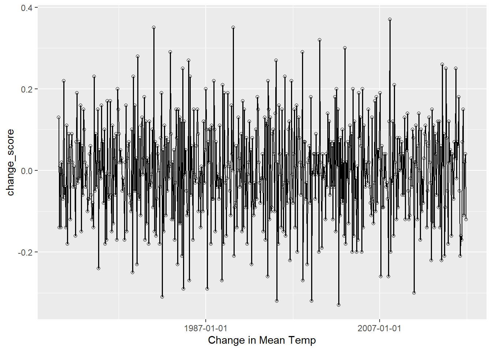
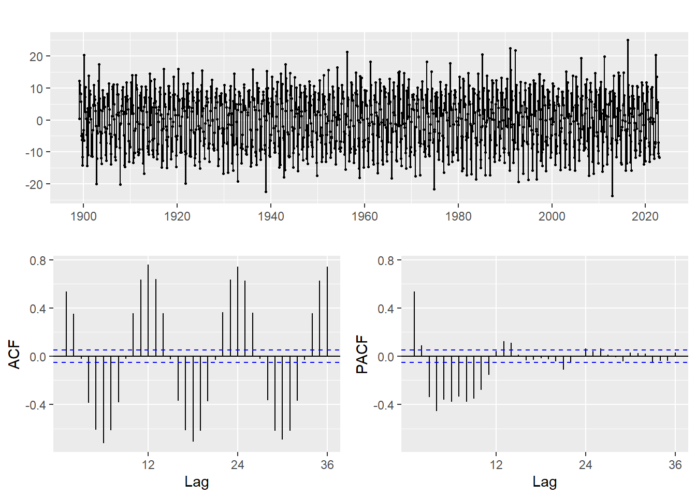
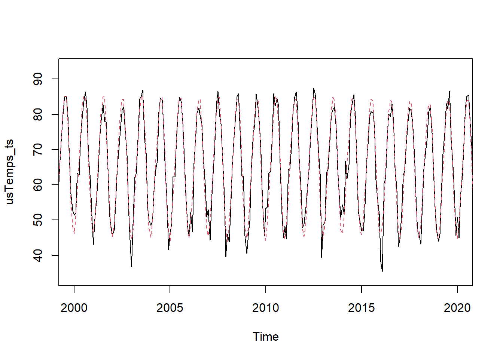

The time has come where we reach our final notes. Will we climax with a bang or fade with a whimper? Only time will tell.
Our goal here will be to summarize several important extensions of autoregressive models to time series applications including ARIMA models, seasonal trends, and vector valued responses. Starting with the first, we need to take an intermediate detour into moving averages. So here we go.
From AR to MA and Back again
Last notes we introduced the class of AR(p) models
\[Y_t = \beta_0 + \beta_1 Y_{t-1} + \cdots + \beta_p Y_{t-p} + \varepsilon_t.\] in which it is assumed that \(y_t\) is a weighted average of the previous \(p\) values plus some noise. The problem with AR models is the following. Suppose there’s a major, unexpected event1 that causes a sudden shock to the stock market. Prices jump or fall sharply in response. Now ask yourself: should today’s price depend on yesterday’s price, and that on the day before, and so on, like a domino effect of prices driving prices?
That’s what an AR model assumes. It says “The value today is explained by the values that came before it.” But in the case of a shock, yesterday’s price may not be a good predictor. The change wasn’t part of a long-running trend. It was a response to new, unexpected information. So, using past prices to explain current ones could be misleading, because what really matters is the shock itself, not the sequence of prices it caused.
This is where a Moving Average (MA) model comes in. Instead of assuming today’s value depends directly on past values, it assumes it depends on past shocks or errors. Thus, the current value depends on the noise terms directly instead of the past values of the process itself.
For example, suppose we have a surprise election result. Then the following sequence of events might occur.
Day 0: big surprise → large shock (error term)
Day 1: market still feeling the effect of that shock
An MA model captures this idea. It says: “Today’s value is a mix of recent shocks, each with a fading influence.” The shock echoes through the system, but it fades over time, and that’s exactly what the MA model tracks: the impact of that initial surprise as it diminishes.
Okay, al this bullshitting out of the way, the mathematical definition of a moving average model of order q (notated MA(q)) is given by the formula3:
To reiterate what we said above, what makes this different from an AR model is that the latter keeps some memory of all the past events: \(Y_t\) depend on \(Y_{t-1}\) which depends on \(Y_{t-2}\) and so on. On the other hand, an MA model ONLY depends on a specific number \(q\) of previous “shocks”. The plot below compares length-1000 samples of simulated AR(1) and MA(1) with \(\beta_1 = \theta_1 = 0.8\) and a noise term that is normal with SD 0.01:
set.seed(45)sig=.1n=1000test=data.frame(t=1:n,yMA1=NA,yAR1=NA,noise=sig*rnorm(n))b1=.8s1=.8test$yMA1[1]=0test$yAR1[1]=0for (i in2:n){ test$yMA1[i]=test$noise[i]+s1*test$noise[i-1] test$yAR1[i]=test$noise[i]+b1*test$yAR1[i-1]}test %>%pivot_longer(yMA1:yAR1,names_to="type",values_to="value") %>%ggplot(aes(x=t,y=value))+geom_point(shape=1)+geom_line()+facet_grid(.~type)

Its a little hard to tell the difference looking at these time series although you could say that the AR model exhibits larger variance with larger swings away from 0 since it has a harder time corrected itself from shocks. The acf comparison is more telling
Both have large positive spikes at lag=1, but the acf for the AR(1) decays more gradually and smoothly towards 0 while the acf for the MA(1) drops off into random noise after lag=1. Compare this with the pacf pictures:
In the pacf, the AR model has a sharp drop off while the MA model is more gradual (reverse of the acf) so we can conclude by saying:
If there is a gradual drop off in the acf and sharp drop off in the pacf, then an AR model is more appropriate
If there is a sharp drop off in the acf and a gradual drop off in the pacf, then an MA model may be more appropriate.
But really, why settle for just one? And what do you do if neither drops off? The next section shows we can have the best of both worlds.
Autoregressive, Integrated Moving Average Models
ARIMA is shorthand notation for the obnoxious sounding title of this subsection. The seminal work of Box-Jenkins presented ARIMA models as a sort of “one ring to rule them all” approach to time series modeling. They combine three of the modeling techniques discussed thus far in the notes
There are three parameters (p,d,q) representing the order of the AR model (p), the number of differences needed to get a stationary process (d), and the order of the MA process (q). Including the “d”” means we no longer have to worry about differencing BEFORE fitting. As such, ALL of our previous time series models can be derived as special cases of ARIMA. Just for good measure, ARIMA also adds an option to include seasonal effects, but we’ll come back to that later.
Before, we look at examples, let’s compare a simulated ARIMA(1,0,1) which combines the previous simulated AR(1) and MA(1) models
test$yARMA1[1]=0for (i in2:n){ test$yARMA1[i]=test$noise[i]+s1*test$noise[i-1]+b1*test$yAR1[i-1]}ggplot(test,aes(x=t,y=yARMA1))+geom_point(shape=1)+geom_line()
Notice that both have a more gradual drop off (the acf looks like the acf for the AR model while the pacf looks like MA). Hence, both.
Public Tuition Rate Data Debrief
Recall that the private school tuition data could be modeled decently well with a random walk. Not so for the four-year public tuition rates which yield the following:
df_url="https://raw.githubusercontent.com/jmayberr/math133-stat-learning-fall2026/refs/heads/main/Datasets/tuition.csv"tuition =read.csv(df_url)tuition$Public.Diff =c(NA, diff(tuition$Public.four.year))par(mfrow=c(1,2))acf(na.omit(tuition$Public.Diff),main="Public Four Year ACF")pacf(na.omit(tuition$Public.Diff),main="Public Four Year PACF")

Given what we said in the previous section, it looks like perhaps the change scores form an AR(1) model (sharp drop off in the pacf) which is confirmed by the following:
Really not much difference. The AIC went up and the MA coefficients is practically 0 so we should stick with the AR(1) for change scores in this case (or equivalently, AR(1,1,0)).
Climate Data.
As an additional investigation, the plot below shows two different estimates of average monthly land and oceanic temperature anomalies on our planet dating back to 1880:5
library(lubridate)df_url="https://raw.githubusercontent.com/jmayberr/math133-stat-learning-fall2026/refs/heads/main/Datasets/monthlyTemps.csv"monthlyTemps =read.csv(df_url)n=nrow(monthlyTemps)# Correct differences in date formats from pre- and post 1900monthlyTemps$Date=c(mdy(monthlyTemps$Date[1:2808]),ymd(monthlyTemps$Date[2809:n]))monthlyTemps |>ggplot(aes(x=Date,y=Mean,color=Source))+geom_point(shape=1)+geom_line()+scale_color_manual(values=c("orange","black"))

Note that the numbers on the y-axis represent the difference between the observed yearly global temperature and the 1951–1980 average. It is clear that the temperature data is not at all stationary so let’s try filtering through first differences
monthlyTemps |>ggplot(aes(x=Date,y=c(NA,diff(Mean)),color=Source))+geom_point(shape=1)+geom_line()+scale_color_manual(values=c("orange","black"))+labs(x="Date",y="Change in Temperature")

Its hard to see with both measurements and GISTEMP looks more stable so let’s look at its control chart
gistemp=monthlyTemps |>filter(Source=="GISTEMP") |>arrange(Date) |>mutate(change_score=Mean-lag(Mean)) cbar=mean(gistemp$change_score)sd_c=sd(gistemp$change_score)gistemp |>ggplot(aes(x=Date,y=change_score))+geom_point(shape=1)+geom_line()+geom_hline(yintercept = cbar)+geom_hline(yintercept = cbar-3*sd_c,linetype ="dashed")+geom_hline(yintercept = cbar+3*sd_c,linetype ="dashed")+xlab("Change in Mean Temp")+scale_x_date(breaks="20 years")

I still don’t think this looks very stationary. There are too many wild fluctuations before the 1970s. Let’s zoom in on more recent history and replot the control chart
gistemp1970=monthlyTemps |>filter(,Source=="GISTEMP",Date >="1970-01-01")|>arrange(Date) |>mutate(change_score=Mean-lag(Mean))cbar=mean(gistemp1970$change_score)sd_c=sd(gistemp1970$change_score)gistemp1970 |>ggplot(aes(x=Date,y=change_score))+geom_point(shape=1)+geom_line()+geom_hline(yintercept = cbar)+geom_hline(yintercept = cbar-3*sd_c,linetype ="dashed")+geom_hline(yintercept = cbar+3*sd_c,linetype ="dashed")+xlab("Change in Mean Temp")+scale_x_date(breaks="20 years")

Finally, that looks a little better. Let’s check out the acf and pacf
The ACF drops off pretty sharply after 1 period while the pacf decays more gradually so this might suggest an MA(1) model. I wonder what the fit looks like? We’ll do a training-testing split to find out, using everything through 2015 as training6
In this case, I would say that doesn’t look too bad. Out of curiousity, I also checked a three step moving average (maybe there is a spike in the acf at 3 as well?), but it doesn’t seem to offer any gains in AIC or MSE:
The forecast package has a function called auto.arima which finds the best arima model up to a certain order (default max order is 5) using AIC or BIC. It suggests a slightly more complicated model, but the MSE doesn’t look much better than our MA(1) so I prefer the simpler fit.
Series: train$Mean
ARIMA(2,1,2) with drift
Coefficients:
ar1 ar2 ma1 ma2 drift
1.0029 -0.1143 -1.5127 0.5234 6e-04
s.e. 0.0957 0.0664 0.0900 0.0866 3e-04
sigma^2 = 0.01191: log likelihood = 1300.65
AIC=-2589.29 AICc=-2589.24 BIC=-2556.91
Training set error measures:
ME RMSE MAE MPE MAPE MASE ACF1
Training set -4.150471e-05 0.1089316 0.08487344 NaN Inf 0.8906169 -0.002217633
Note: The website Nasa website has more recent data on global temperatures if you would like to see how the predictions carry into more recent days.
Brief Note on Testing for Stationarity
Anytime you fit an ARIMA model, you are implicitly assuming that the time series is stationary (after differencing). Control charts give a way of informally testing this and the runs test can tell you if there are correlated runs, but another go-to is the Augmented Dickey-Fuller (ADF) Test. The null hypothesis of ADF is that the process is non-stationary so if the p-value is small like below, it is evidence of stationarity:
Augmented Dickey-Fuller Test
data: na.omit(gistemp1970$change_score)
Dickey-Fuller = -10.329, Lag order = 8, p-value = 0.01
alternative hypothesis: stationary
On the flip side, the Kwiatkowski-Phillips-Schmidt-Shin (KPSS) Test takes the opposite approach of assuming the process is stationary as the null hypothesis. With the gistemp data, we fail to reject the null (high p-value) meaning there is not sufficient evidence that the process is non-stationary.
kpss.test(na.omit(gistemp1970$change_score))
KPSS Test for Level Stationarity
data: na.omit(gistemp1970$change_score)
KPSS Level = 0.0097115, Truncation lag parameter = 6, p-value = 0.1
(Not so) Brief Note on Seasonal Effects
Some time-series data may exhibit seasonal trends in addition to dependence on recent observations. For example. Before we look at how seasonal effects are incorporated into ARIMA, let’s take a step back and discuss three primary components of a time series:
Trend
Seasonal Variations
Irregular Variations
Trend refer to the long term “up or down” average behavior of the process. Seasonal refers to periodic fluctuations that depend on, as the name suggests, season. Irregular refers to the noise components of your model. Here is how to break a time-series down into components using STL (Seasonal and Trend breakdown using LOESS). Note the use of the “ts” = time series object in R. The format here is that you provide the \(Y\)’s for the time series, the first date and the number of observations per year and then its stores the times implicitly in the object:
Another advantage of the this type of object is you can used the ggtsdisplay function from the forecast package in a ggplotish way to get quick plots of the change scores (leave out diff if you want the process itself):
ARIMA can also incorporate seasonal effects; we specify an order for the seasonal component in the same was we do the “trend part” of our series. Recalling that ARIMA\((p,d,q)\) specifies the AR, difference, and MA parts, respectively, we use \((P,D,Q)_m\) to do seasonal components for AR, difference, and MA, respectively, with \(m\) as the period. I don’t see any reason for the d and D to ever be different. The q and Q? Maybe, if for some reason there is a one year seasonal effect but a three month trend effect, for example. Noticing that the pacf did have some spikes out in the 20s, let’s try an MA(3) model for the differences with a two year seasonal trend using AR
The MSE is slightly higher than our earlier models so I wouldn’t suggest it here. I also tried using MA instead of AR for the seasonal effect to no avail.
To get something that surely is seasonal, here are the monthly temps in the US over the past three years, loaded and then converted to a time series:
Let’s look at the time series acf and pacf for the change scores
usTemps_ts |>diff() |>ggtsdisplay()

That type of strict oscillating pattern in the acf is a dead giveaway for a seasonal component: negative correlations at the half-way through the year mark (6 months,18 months, etc) and positive at the full-period marks (12,24, etc). Since the corresponding spikes in the pacf are decaying (but still there), I think a MA model makes sense for the seasonal component. For the trend? Now I am out of my element a little, but if I had to guess, I would say let’s try MA(3) because there are three months in a season
Let’s compare the model with the data showing the last 22 years. It seems like maybe the swings in the data are more drastic than the model, but overall, not too bad!
residuals =residuals(us_arima)msft_fitted = usTemps_ts- residualsplot(usTemps_ts,xlim=c(2000,2020))points(msft_fitted, type ="l", col =2, lty =2)

Vector Autoregressive Models
Now that we have discussed extending AR models to incorporate MA , differencing, and seasonal effects, let’s conclude by discussing what to do if you have multiple interrelated variables evolving over time.
To illustrate, we’ll use the Canada dataset from the vars package:
This dataset contains quarterly reports on four economic variables. The variable prod is a measure of labor productivity based of GDP and CPI, e is a measure of employment strength, U is unemployment rate, and rw is “real wage7” on a log scale.
An AR(1) model would only allow us to look at how \(E_t\) depends on \(E_{t-1}\), etc. A vector autoregressive model of order 1 (VAR(1)) instead assumes that \[E_t = \beta_0 + \beta_1 E_{t-1}
+ \beta_2 P_{t-1}
+ \beta_3 W_{t-1}
+ \beta_4 U_{t-1} + \varepsilon_t\] and similarly for the other variables. We could write this in matrix-vector form as \[\begin{pmatrix}
E_t \\
P_t \\
W_t \\
U_t
\end{pmatrix}
=
\begin{pmatrix}
\beta_{10} \\
\beta_{20} \\
\beta_{30} \\
\beta_{40}
\end{pmatrix}
+
\begin{pmatrix}
\beta_{11} & \beta_{12} & \beta_{13} & \beta_{14} \\
\beta_{21} & \beta_{22} & \beta_{23} & \beta_{24} \\
\beta_{31} & \beta_{32} & \beta_{33} & \beta_{34} \\
\beta_{41} & \beta_{42} & \beta_{43} & \beta_{44}
\end{pmatrix}
\begin{pmatrix}
E_{t-1} \\
P_{t-1} \\
W_{t-1} \\
U_{t-1}
\end{pmatrix}
+
\begin{pmatrix}
\varepsilon_{1t} \\
\varepsilon_{2t} \\
\varepsilon_{3t} \\
\varepsilon_{4t}
\end{pmatrix}\]
or more simply as \[Y_t = \beta_0 + \beta Y_{t-1} + \varepsilon_t \] if we keep in find that \(Y_t, \varepsilon_t\) are vectors and \(\beta\) is a matrix.
The VAR function will find a fit and also perform hypothesis tests to determine if the coefficients of the variables are significantly nonzero8. For example in the output below, in the equation for \(U\), all four lagged predictors are significant but \(prod\) only depends on its own lagged value.
#Type = constant tells it to include an interceptmodel =VAR(Canada, p=1, type="const")summary(model)
VAR Estimation Results:
=========================
Endogenous variables: e, prod, rw, U
Deterministic variables: const
Sample size: 83
Log Likelihood: -213.774
Roots of the characteristic polynomial:
0.9928 0.9526 0.9526 0.7511
Call:
VAR(y = Canada, p = 1, type = "const")
Estimation results for equation e:
==================================
e = e.l1 + prod.l1 + rw.l1 + U.l1 + const
Estimate Std. Error t value Pr(>|t|)
e.l1 1.17354 0.08196 14.319 < 2e-16 ***
prod.l1 0.14479 0.02741 5.282 1.13e-06 ***
rw.l1 -0.07905 0.02832 -2.791 0.00660 **
U.l1 0.52438 0.16574 3.164 0.00222 **
const -192.56361 63.81154 -3.018 0.00344 **
---
Signif. codes: 0 '***' 0.001 '**' 0.01 '*' 0.05 '.' 0.1 ' ' 1
Residual standard error: 0.4798 on 78 degrees of freedom
Multiple R-Squared: 0.9973, Adjusted R-squared: 0.9972
F-statistic: 7304 on 4 and 78 DF, p-value: < 2.2e-16
Estimation results for equation prod:
=====================================
prod = e.l1 + prod.l1 + rw.l1 + U.l1 + const
Estimate Std. Error t value Pr(>|t|)
e.l1 0.08710 0.11823 0.737 0.464
prod.l1 1.01970 0.03955 25.785 <2e-16 ***
rw.l1 -0.02629 0.04085 -0.644 0.522
U.l1 0.32299 0.23910 1.351 0.181
const -81.55110 92.05141 -0.886 0.378
---
Signif. codes: 0 '***' 0.001 '**' 0.01 '*' 0.05 '.' 0.1 ' ' 1
Residual standard error: 0.6921 on 78 degrees of freedom
Multiple R-Squared: 0.9746, Adjusted R-squared: 0.9733
F-statistic: 747.4 on 4 and 78 DF, p-value: < 2.2e-16
Estimation results for equation rw:
===================================
rw = e.l1 + prod.l1 + rw.l1 + U.l1 + const
Estimate Std. Error t value Pr(>|t|)
e.l1 0.06381 0.13481 0.473 0.63729
prod.l1 -0.13551 0.04509 -3.005 0.00357 **
rw.l1 0.96873 0.04658 20.797 < 2e-16 ***
U.l1 -0.19538 0.27262 -0.717 0.47571
const 11.61376 104.96033 0.111 0.91218
---
Signif. codes: 0 '***' 0.001 '**' 0.01 '*' 0.05 '.' 0.1 ' ' 1
Residual standard error: 0.7892 on 78 degrees of freedom
Multiple R-Squared: 0.9988, Adjusted R-squared: 0.9988
F-statistic: 1.681e+04 on 4 and 78 DF, p-value: < 2.2e-16
Estimation results for equation U:
==================================
U = e.l1 + prod.l1 + rw.l1 + U.l1 + const
Estimate Std. Error t value Pr(>|t|)
e.l1 -0.19294 0.06129 -3.148 0.002331 **
prod.l1 -0.08087 0.02050 -3.944 0.000174 ***
rw.l1 0.07539 0.02118 3.559 0.000637 ***
U.l1 0.47531 0.12396 3.835 0.000254 ***
const 186.80892 47.72282 3.914 0.000193 ***
---
Signif. codes: 0 '***' 0.001 '**' 0.01 '*' 0.05 '.' 0.1 ' ' 1
Residual standard error: 0.3588 on 78 degrees of freedom
Multiple R-Squared: 0.9524, Adjusted R-squared: 0.95
F-statistic: 390.5 on 4 and 78 DF, p-value: < 2.2e-16
Covariance matrix of residuals:
e prod rw U
e 0.23020 0.05311 -0.10293 -0.14055
prod 0.05311 0.47903 0.02617 -0.02913
rw -0.10293 0.02617 0.62281 0.08092
U -0.14055 -0.02913 0.08092 0.12875
Correlation matrix of residuals:
e prod rw U
e 1.0000 0.1599 -0.2718 -0.8164
prod 0.1599 1.0000 0.0479 -0.1173
rw -0.2718 0.0479 1.0000 0.2857
U -0.8164 -0.1173 0.2857 1.0000
For those who have taken some linear algebra, you might be drawn to the line “Roots of the characteristic polynomial”. These are the eigenvalues of the coefficient matrix \(\beta\). The process is stationary if all the eigenvalues are less than 1 (in modulus) which they are here.
Let’s finish it off then with a nice predictive picture. First, a training-testing split
n =nrow(Canada)n_train =floor(0.8*n)# Since this is time series data, we'll use the window function to pull the start and endtrain =window(Canada, end=time(Canada)[n_train])test =window(Canada, start=time(Canada)[n_train+1])n_test =nrow(test)
Then we’ll calculate predictions:
# Fit VAR(1)model =VAR(train, p=1, type="const")# Generate forecastspreds =predict(model, n.ahead=n_test)# Extract point forecasts for all four variablesforecast_values =do.call(cbind, lapply(colnames(Canada), function(v) { preds$fcst[[v]][, "fcst"]}))colnames(forecast_values) =colnames(Canada)# Convert forecasts to a time seriesforecast_ts =ts(forecast_values,start=start(test),frequency=frequency(Canada))
They all look good except prod. I don’t know what’s going on with there, but I think we can probably blame Trump9.
A closing haiku
lm to ma You have come to love them all Now go and use them!
Write your own destiny.
Footnotes
Like Trump getting elected in 2024 or the blue tsunami of 2026.↩︎
Maybe more like Year 10 in the case of Trump getting elected, but you get the point.↩︎
Sometimes you may see this definition with minus signs instead, but the two versions are equivalent.↩︎
It may be super confusing why the term “integrated” is applied to differencing, but it has to do with the fact that when you try to make predictions on the original process after fitting a model to the differences, you essentially have to integrate back up.↩︎
Data from: https://datahub.io/core/global-temp#readme↩︎
I know I said that you should be able to do this using the process itself and setting d = 1 but it was giving some funky predictions so I think this is better.↩︎
I don’t actually know what this means but that’s what the help menu says. I assume as a mathematician its to distinguish it from imaginary wages.↩︎
Same as what you would get if you ran four separate lm calls for each component.↩︎
Although its going up when the predictions say it should go down so “blame” wouldn’t be right and also this is pre-Trump, but I am going with the statement anyways. There is a more detailed description of this dataset here↩︎